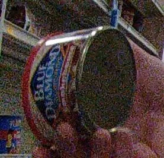
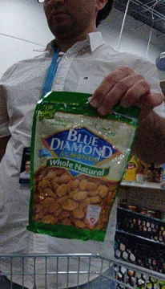
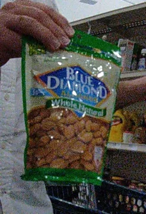
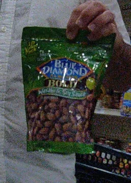
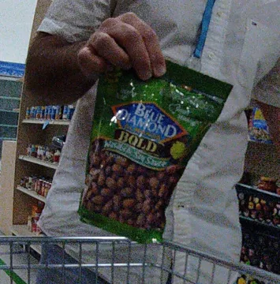
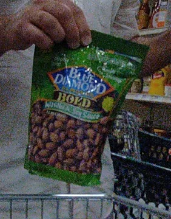
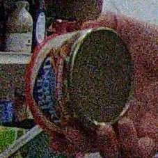
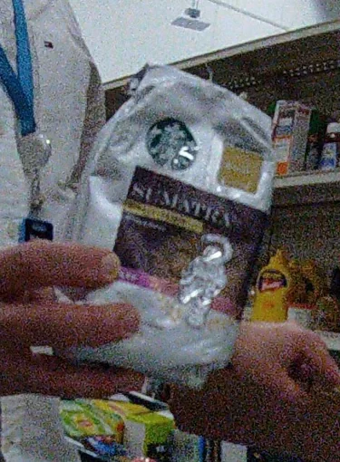

A Transferable Variant Signal
That Grocery Retrieval Cannot Reach

Artificial Intelligence Graduate Program
University of the Philippines, Diliman, Quezon City
18th Asian Conference on Computer Vision (ACCV 2026)
Oral PresentationAbstract
Automated grocery checkout requires matching a product photograph to its exact catalog entry. Products of the same brand often differ only in flavor, size, or packaging. We examine whether a retrieval error reflects a missing distinction in the image features or a failure to match that distinction to text. On GroceryVision, SigLIP2 with fixed encoder weights ranks the correct description first for 81.3% of photographs from training brands. A linear classifier that uses the same image features to distinguish variants within each brand achieves 97.1% balanced accuracy, giving each variant equal weight within its brand. To test transfer, we estimate shared directions from the differences between each variant’s features and its brand mean. We then project photographs and descriptions of new brands onto those directions. Across nine models, average retrieval accuracy is higher with the original variant labels than with labels randomly reassigned among training photographs of the same brand. On the two models examined in detail, most of this gain comes from fewer errors between brands. Compared with frozen SigLIP2, fine-tuning the full image encoder improves retrieval on new brands at the lower of two learning rates and reduces accuracy at the higher rate. These results show that frozen image features encode distinctions between variants that image-to-text similarity does not consistently recover.
TLDR
A grocery retrieval model can return an incorrect variant of the correct brand. A classifier can distinguish these variants using the same frozen image features. We asked whether the visual differences between one brand’s variants also help identify products from other brands. We learned directions from correctly labeled photos and repeated the experiment after randomly reassigning the product names within each training brand. On the two models we examined in detail, correct labels mainly reduced matches to the wrong brand. For SigLIP2, the advantage was 13.6 percentage points across the full catalog and 3.9 points when all candidates belonged to the correct brand.
Catalog rankings for Starbucks Sumatra
Original variant labels
- Sumatra0.4920
- Pike Place0.4663
- Breakfast Blend0.4373
Shuffled variant labels
- Pike Place0.4608
- Sumatra0.4409
- Breakfast Blend0.3625
Motivation
An automated grocery checkout system must identify the specific product a shopper selects. Its multimodal product retrieval (MPR) model uses an in-store photograph as the query and written product descriptions as the catalog. Variants of the same brand can share a logo and package design. The distinction between them may depend on a single word, and a shopper’s hand can obscure that word in the photograph. [1]
In an earlier study, we tested 190 frozen vision-language models on GroceryVision. SigLIP2-gopt-384 placed the correct description among its first five candidates for 94.5% of photos (Recall@5). It ranked that description first for 77.0% (Recall@1). The difference of 17.5 percentage points measures how often the correct item was already on the shortlist but another product ranked above it. [2]
Figure 1 illustrates a retrieval error within one brand. Given a photograph of Campbell’s Creamy Tomato soup, frozen SigLIP2 ranks Chicken Noodle first and Creamy Tomato second. We first test whether the frozen image features distinguish such variants independently of the catalog text. We then test whether the directions that distinguish variants of training brands also support retrieval for brands excluded from training.
Shelf camera and catalog retrieval
Video explainer
Read the transcript
At a grocery store, a shopper picks one item from a shelf. Amazon's Just Walk Out uses cameras and shelf sensors to keep track of what people take or put back. Retail can also be studied in a virtual store. Here a researcher moves through the Sari Sandbox simulation. Virtual try-on lets a shopper preview an item, such as glasses, on their own image.
A Transferable Variant Signal That Grocery Retrieval Cannot Reach. Emmanuel G. Maminta and Rowel O. Atienza, Artificial Intelligence Graduate Program, University of the Philippines Diliman. An oral presentation at the Asian Conference on Computer Vision in Osaka.
Our study asks how a checkout system identifies the exact product for a receipt. A model compares a camera photo with written catalog descriptions. This is called multimodal product retrieval. The model turns the photo and each description into lists of numbers. It scores each pair by how closely their directions line up. This can is Campbell's Creamy Tomato. The model ranks Chicken Noodle first. It found the brand, but missed the flavor.
In earlier work, we tested 190 image and text encoders on GroceryVision. For SigLIP2 at 384 pixels, the correct product appeared in the first five choices 17.5 percentage points more often than it ranked first. A shortlist can contain the right answer while the receipt still lists the wrong item.
When the model chooses the wrong flavor, do its image measurements still tell the two flavors apart? And can the differences learned from some brands help identify products from a new brand?
First, we freeze the image encoder. Its measurements of a photo stay fixed. We train a small classifier, called a linear probe, to distinguish varieties within one brand. Here the varieties are almonds. On separate photos, SigLIP2 features give 97.1 percent balanced accuracy. Each variety counts equally within its brand. So the image features retain distinctions that the comparison with text can miss.
We make a second version of the training set. The photos stay in place. Shuffle the variety names within the brand. Each name still appears twice here. The test photo keeps its correct label. We will fit the directions again using the shuffled training groups, then compare the results.
Start with the correct names. Imagine one dot for each photo, placed according to the features of that image. Average the dots for each product. Then find the center of the products in each brand. An arrow from that center to a product shows how the variety differs from its brand. Each arrow becomes a row of a table. Each column corresponds to one image feature.
Imagine turning a ruler through the center of the arrows. Drop each tip straight down onto the ruler. Some angles spread the marks apart more than others. Keep the direction with the greatest spread. The next direction captures the most remaining variation at a right angle to the first.
Singular value decomposition finds these directions in the full table. The first matrix is called U. Each column gives the weights for one direction. A plus or minus sign tells which way each variety lies. Sigma gives the strength of that direction. Each row of V transpose gives the direction in the original image features. We keep the strongest 64 directions. Together they form the variant subspace.
We learned those directions from the training brands. Starbucks was absent. We project the photo and each description onto those directions. That means measuring both with the same rulers. We draw the arrows the same length, then compare their angles. Ten test photos show Sumatra coffee. Their average image vector scores highest against the Sumatra description. Using the directions fitted with shuffled names, the same average ranks Pike Place first.
We repeat the experiment ten times. Each time we fit the directions on one set of brands and test on others. For SigLIP2, correct labels improve the first choice by 13.6 percentage points over shuffled labels across all 409 descriptions. When every candidate belongs to the correct brand, the gain is 3.9 points. So most of the gain comes from fewer matches to the wrong brand. The full, original embedding still gives the highest retrieval accuracy.
The shopper chose a particular flavor. The receipt needs to name that variety. Our probe showed that image features could tell varieties apart. On new brands, the learned directions mostly corrected brand mistakes. A useful visual representation preserves the difference between two products. To identify the exact item, the comparison with text must use that difference too.
Film sources and credits
- Automated checkout
- Amazon describes how cameras and shelf sensors associate items with a shopper’s cart. Andy Li photographed the ceiling cameras at an Amazon Go store in 2018. Just Walk Out. Camera photograph (CC0).
- A virtual grocery store
- The store walkthrough is an excerpt from Gajo et al.’s Sari Sandbox, a research environment presented at the 2025 ICCV Workshop on RetailVision. Sari Sandbox. Original walkthrough, trimmed and resized under the Apache License 2.0.
- Virtual eyewear try-on
- Warby Parker’s virtual try-on previews eyeglasses on a shopper’s face. For the film, we illustrate the technique by tracking a moving portrait by Andy Barbour. The model is Sunglasses Khronos by Eric Chadwick, © 2024 Darmstadt Graphics Group GmbH, adapted for fit, materials, and lighting. Warby Parker Virtual Try-On. Original portrait (Pexels license). 3D model (CC BY 4.0).
- Shopping and receipt footage
- Kampus Production filmed the shoppers entering the store, selecting groceries, and outside with their purchases. They also filmed a cashier handing over a receipt. Shelf inspection was filmed by Gustavo Fring and the receipt close-up by Mizuno K. Pexels license.
- Research and product photographs
- The catalog rankings, classification results, and transfer experiments come from this paper. The earlier retrieval study measured how often the correct description appeared among the first five candidates. ACCV paper. Supplementary experiments. Earlier retrieval study. GroceryVision product photographs, resized under CC BY-NC 4.0.


How image-to-text retrieval ranks catalog entries
A vision-language model such as SigLIP2 encodes the query image and each catalog description as vectors in a shared feature space. The text vectors can be computed in advance. At retrieval time, the model ranks descriptions by cosine similarity, which measures the alignment between the image vector and each text vector. The highest-scoring description is the prediction. For GroceryVision, we prepared one description per product from its catalog fields and one example photograph. [3] [4]
Variant classification from frozen image features
We train a separate linear probe for each brand. This classifier uses a weighted sum of frozen image features to assign a score to each variant. We fit the classifier on six labeled photos per variant and predict the highest-scoring variant on held-out photos of the same products. The image encoder remains fixed throughout, and the probe uses only image features. [5]
The example below compares two classifiers on three varieties of Blue Diamond almonds. One uses the original variety labels. For the control with shuffled labels, we randomly reassign the variety labels among the 18 training photos, retaining six examples per variety, and fit a second classifier. Both classifiers are evaluated on the same twelve test photos with their original labels.
Training set (18 photos)
Each row groups photos by their assigned training label.
Smokehouse



Whole Natural






Wasabi & Soy Sauce






Prediction on a held-out photo

Photographed variety
Smokehouse
Classifier’s prediction
Smokehouse
The classifier predicts the correct variety for 12 of 12 test photos with original labels and 5 of 12 with shuffled labels.
Probe fitting and evaluation
For each variety we used six photos for training and four for testing. We used the training set to standardize the features, then fitted multinomial logistic regression with either the original labels or one random permutation of those labels. This example illustrates the procedure for one brand. Table 1 reports the benchmark results across brands and three runs.
The SigLIP2 probe achieved 97.1% balanced accuracy. We calculated accuracy separately for each variant, averaged across variants within each brand, and then averaged across brands. Frozen SigLIP2 achieved 81.3% Recall@1 in the retrieval task, the proportion of photos for which the correct catalog description ranked first. The probe classifies variants of a known brand using labeled examples. The retriever must select a description from the full catalog. High probe accuracy establishes that the image features contain information about variant identity. Paper, Table 1.
What is subspace transfer?
To learn visual differences shared across brands, we first average the normalized image features for each product. Within each training brand, we compute the mean of these product averages and subtract it from each product vector. Each centered vector describes how one variant differs from the average for its brand. We pool the centered vectors across training brands and identify the directions along which they vary most. These directions span the variant subspace.
We test subspace transfer by applying these same directions to a brand whose photos were excluded from the fit. We project its query image and the candidate catalog descriptions onto the subspace, normalize the projected vectors, and rank descriptions by cosine similarity. The rank is the number of directions retained. Paper, §4.2.
Mean image features per product
Each small mark represents a store photograph. A larger mark denotes the mean feature vector for one variant. The two brands each contribute three variants.
The plot shows three directions in the original 1,536-dimensional feature space. Two are the leading directions of the fitted subspace. The third displays separation between the two training brands. The plane represents the two leading directions.
Interpretation of U, Σ, and V
Let D contain one centered training variant per row and one image feature coordinate per column. Its singular value decomposition is
D = U Σ VT.
- V
- The columns are orthogonal directions in the original feature space. We use the same directions to project images and text for a new brand.
- Σ
- The diagonal contains the singular values in descending order. A larger value indicates more variation along the corresponding direction.
- U
- Each row gives a training variant’s signed weights along the directions. The corresponding row of UΣ gives its coordinates relative to its brand mean.
The first k columns of V define the rank-k subspace. At test time we project the original image and text vectors directly onto these directions, without subtracting a training mean. We normalize each projected vector to unit length before computing cosine similarity. Supplement, §S2.
Within-brand retrieval of coffee variants
This example isolates the distinction between three coffee roasts of the same brand. In this trial we fitted the subspace using brands other than Starbucks. We then ranked descriptions for each Starbucks test image. The control uses the same training photos with variant labels randomly reassigned within each brand, preserving the number of examples per variant. Compare the rankings with either the three roast descriptions or the full catalog.

Ranked descriptions
Sumatra ranks first among three descriptions for this photo.
- Sumatra 0.4415
- Breakfast Blend 0.4398
- Pike Place 0.4091
View the top-ranked description
The product is a white bag of Starbucks Sumatra coffee featuring a green logo and a dark label with gold text.
With 64 directions and three candidate descriptions, the subspace fitted with original labels retrieved the correct roast for 29 of 30 photos. The displayed shuffled-label fit retrieved 16 of 30 correctly. This example had the largest within-brand gain among the cases eligible for Figure 2. The aggregate results include all eligible test brands. Paper, Figure 2.
Subspace transfer to new brands
To distinguish improvements in brand identification from improvements in variant identification, we evaluated the same test photos under two conditions. In the first, each photo was compared with all catalog descriptions. In the second, the candidate descriptions were limited to products of the correct brand, so retrieval depended on distinguishing variants within that brand.
Each brand split assigns entire brands to training, validation, and test sets. All variants of a brand stay in the same set within a trial. Training brands supply the photos used to fit the subspace, validation brands are reserved for model selection, and test brands supply the queries used to measure transfer. We evaluated ten such assignments.
At rank 64, all nine models achieved higher average Recall@1 with original variant labels than with labels randomly reassigned within each training brand. Restricting the catalog to the correct brand reduced this advantage by about 70% on the two models analyzed in detail. For SigLIP2, the gain decreased from 13.6 to 3.9 percentage points. For MobileCLIP, it decreased from 4.5 to 1.2 points. Paper, Figure 3. [6]
Most of the retrieval gain comes from fewer cross-brand errors
Gain in Recall@1 over shuffled variant labels (percentage points)
SigLIP2-gopt-384
MobileCLIP-B
Centering the training features removes each brand’s mean from the subspace fit. A direction that distinguishes variants of one brand can also separate products from different brands at test time. The comparison of candidate sets measures these two contributions. It does not identify the visual attribute, such as package color, associated with a particular direction. Paper, §4.2.
Effect of subspace rank on retrieval
For each model and rank, the table compares directions estimated from original labels, directions estimated from shuffled labels, and randomly chosen directions. The full frozen feature vector provides a reference. Retrieval accuracy increases with rank from 16 to 128 for both models. The full vector achieves the highest Recall@1 in each comparison.
| Features used for matching | Correct first match (Recall@1) ↑ |
|---|---|
| Directions from original variant labels | 51.7% |
| Directions from shuffled variant labels | 38.1% |
| Random directions | 8.8% |
| All original model features | 73.6% |
At rank 64, SigLIP2-gopt-384 achieves 51.7% Recall@1 with original variant labels and 38.1% with shuffled labels.
Generalization after fine-tuning
A linear map fitted to image features from training brands increased SigLIP2’s Recall@1 on those brands from 81.3% to 98.9%. On new brands it reduced Recall@1 from 78.7% to 58.3%. When we fine-tuned the full image encoder, performance on new brands depended on the learning rate, which controls the size of the weight updates. Recall@1 exceeded the frozen baseline at the lower rate and fell below it at the higher rate. ProxyNCA, which learns a representative vector for each training product, exceeded the baseline at both rates. [7]
| Image model | Learning rate | Brands used for training Recall@1 ↑ | Brands set aside for testing Recall@1 ↑ |
|---|---|---|---|
| Frozen SigLIP2 | — | 81.3% | 78.7% |
| Linear image feature map (GA) | — | 98.9% | 58.3% |
| Full fine-tuning | 5 × 10−5 | 99.6% | 72.1% |
| Full fine-tuning | 2 × 10−5 | 98.1% | 83.9% |
| ProxyNCA | 5 × 10−5 | 90.5% | 84.5% |
| ProxyNCA | 2 × 10−5 | 89.9% | 87.6% |
We fixed the lower rate after inspecting test results from the first three trials. The ten-trial average includes those trials. Paper, §5. Download the table (CSV).
Implications for grocery retrieval
An image-to-text retrieval error can occur even when a linear classifier distinguishes variants using the same image features. The catalog text vectors also show limited separation between variants. In the first SigLIP2 trial, mean cosine similarity between descriptions was 0.733 within a brand and 0.465 across brands. Closely aligned descriptions can receive similar scores for the same image. The transfer experiment also shows why catalog-wide accuracy alone is insufficient to assess variant recognition. Evaluating retrieval within the correct brand isolates the distinction between products that share a brand but differ in flavor, size, or packaging. Paper, §4.2.
References
- GroceryVision organizers. The 4th GroceryVision Challenge, Track 2. ICCV RetailVision Workshop, 2025.
- E. G. Maminta and R. O. Atienza. What Matters for Grocery Product Retrieval with Open Source Vision Language Models. ICPR 2026.
- A. Radford et al. Learning Transferable Visual Models From Natural Language Supervision. ICML, 2021.
- M. Tschannen et al. SigLIP 2: Multilingual Vision-Language Encoders with Improved Semantic Understanding, Localization, and Dense Features. 2025.
- G. Alain and Y. Bengio. Understanding Intermediate Layers Using Linear Classifier Probes. 2016.
- P. K. A. Vasu et al. MobileCLIP: Fast Image-Text Models through Multi-Modal Reinforced Training. CVPR, 2024.
- Y. Movshovitz-Attias et al. No Fuss Distance Metric Learning Using Proxies. ICCV, 2017.
- Y.-W. Chao et al. DexYCB: A Benchmark for Capturing Hand Grasping of Objects. CVPR, 2021.
Citation
@inproceedings{maminta2026variant,
title = {A Transferable Variant Signal That Grocery Retrieval Cannot Reach},
author = {Maminta, Emmanuel G. and Atienza, Rowel O.},
booktitle = {Proceedings of the Asian Conference on Computer Vision (ACCV)},
year = {2026}
}